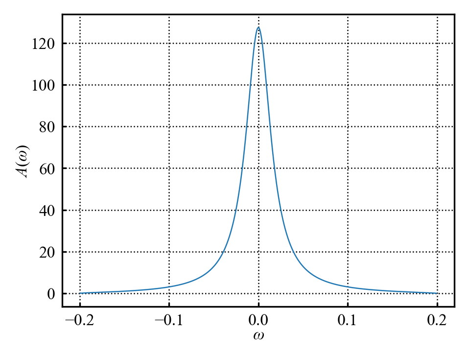
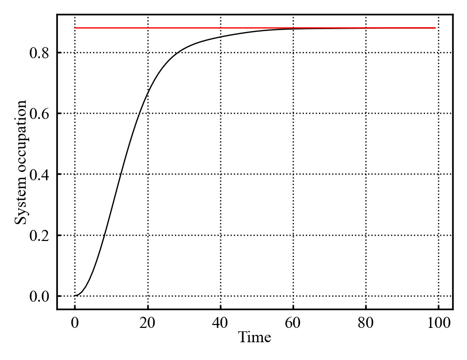
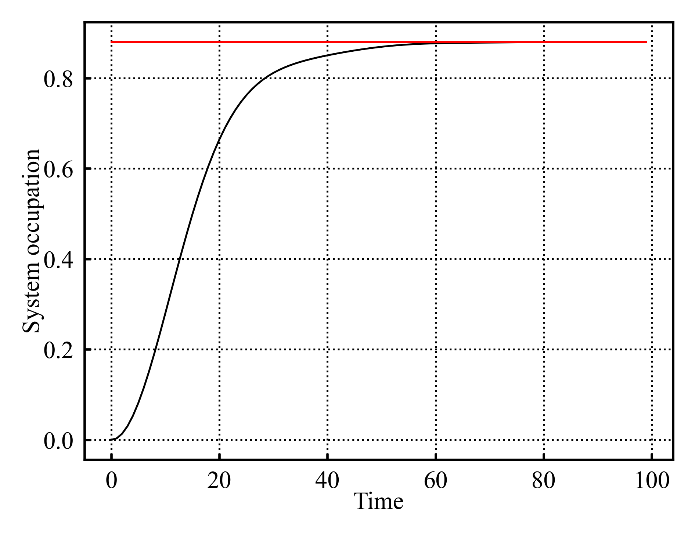
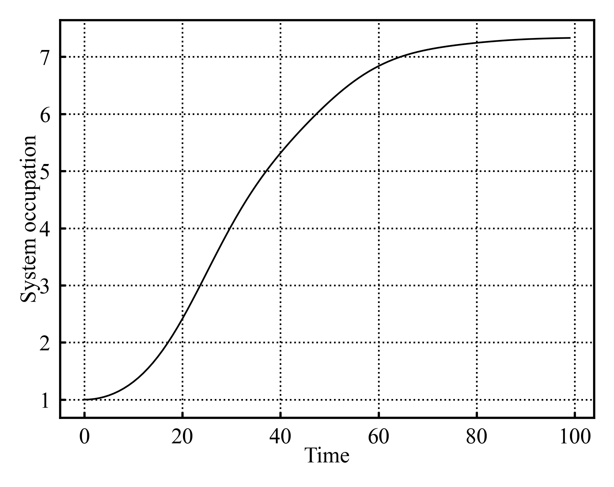
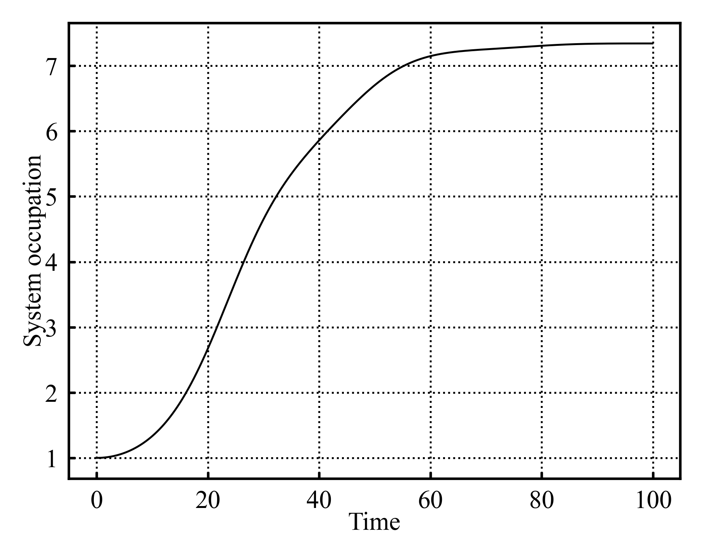
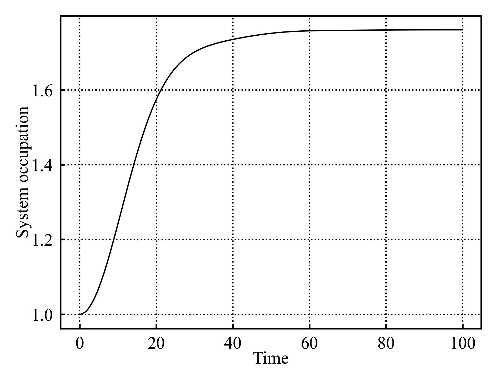
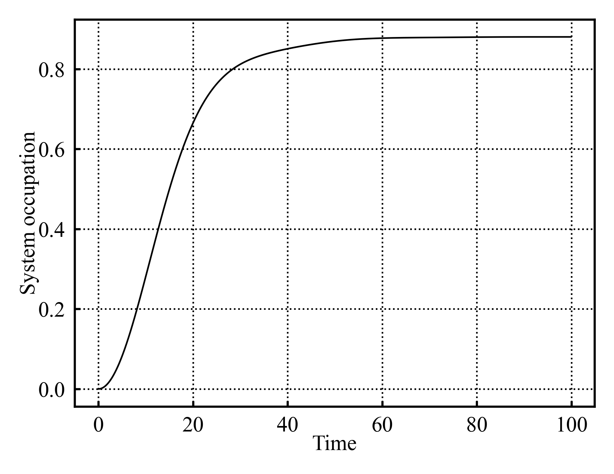
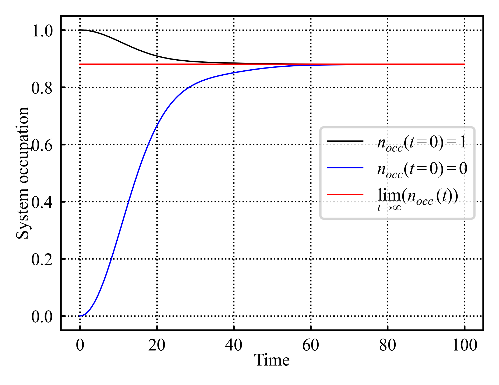

05/10/2026
Continuing on with the analytical thermalization implementation. Have finished implementing the analytical thermalization into it’s own little object. It is able to produce the expected system occupation, as well as plot \(A(\omega)\). The simulation object generates a thermalization object such that it can compare the analytical vs numeric thermalization on the plot (as in Figure 1, Figure 2)


That took significantly longer than I would have liked; trying for symbolic automation of that integral was a poor idea.
Have also quickly setup the bones of the dual simulation system. Idk yet how to extract the dynamical map, but know that it will involve 2sims, 1 w/system starting occupied, the other w/unoccupied system. SO have setup a class that contains and runs and occupied and occupied simulation alongside basic utilities for it.
06/10/2026
Starting to look at the dynamical map; David has updated (Strachan 2026) with a quick outline.
Reading notes: Dynamical map extraction (Strachan 2026)
Because the simple model we’re using only allows the system to be in a \(\ket{0}\), or \(\ket{1}\) state, we expect the dynamical map to be a 2x2 matrix of form:
\[ \hat{\Lambda(t)} = \begin{bmatrix} \nu & \sigma \\ \alpha & \beta \end{bmatrix} \tag{1}\]
Considering it’s action on some state of occupation \(p\) \(\ket{\psi}=\begin{bmatrix}1-p \\ p\end{bmatrix}\) and enforcing trace preservation yields:
\[ \hat{\Lambda(t)}\ket{\psi} = \begin{bmatrix}\nu(1-p)+\sigma p \\ \alpha(1-p)+\beta p \end{bmatrix} \tag{2}\]
\[ \downarrow \]
\[ \nu(1-p)+\sigma p+\alpha(1-p)+\beta p=1 \]
\[ (\nu+\alpha)+(\sigma+\beta-nu-\alpha)p = 1 \]
which can only hold \(\forall p\) if:
\[ \hat{\Lambda(t)} = \begin{bmatrix} \nu & \sigma \\ 1-\nu & 1-\sigma \end{bmatrix} \tag{3}\]
Need to ensure “positivity” (unsure as to exactly why, but will roll w/it). Equation 2 maps initial occupation \(p\) to a new occupation \(p^{*}=\nu(1-p)+\sigma p = \alpha(1-p)+\beta p\). Oh i see why positivity; \(p^{*}\) represents an occupation probability; negative values are nonsensical ergo \(p^{*}\in[0,1]\) is a useful condition. Expressing \(p^{*}=C_{11}(t)\) where \(C\) is the correlation matrix directly links the dynamical map s.t:
\[ C_{11}(t)= \begin{cases}1-\nu & C_{11}(0)=0=\textit{occupied} \\ \nu-\sigma & C_{11}(0)=1=\textit{unoccupied} \end{cases} \tag{4}\]
Therefore:
\[ \hat{\Lambda(t)} = \begin{bmatrix} 1-C_{occ}(t) & 1-C_{occ}(t)-C_{unocc}(t) \\ C_{occ}(t) & C_{occ}(t)+C_{unocc}(t) \end{bmatrix} \tag{5}\]
where \(C_{occ}(t)=C_{11}(t)\) for the initially occupied state, \(C_{unocc}(t)=C_{11}(t)\) for the initially unoccupied state.
It is a touch unclear to me over which \(t\) \(C_{11}(t)\) needs to be measured. My naive assumption is that it needs to be defined over all \(t\) of interest; so simulate till thermalization and then \(\Lambda(t)\) encapsulates the dynamics over that time range. If so, the dynamical map would probably be stored as either a time-instantaneous dynamical map dictionary, or in an array. Far less storage required compared to the full correlation matrix (besides which the dynamical map is the primary object of analysis for later).
But assuming i’m correct, then implementing the dynamical map should simply be a matter of querying \(C_{11}(t)\) for the occupied and unoccupied simulations respectively, and inputting those values into Equation 5.
Have added some empty functions and code comments to the dual sim object; nothing functional yet, just systems that will support this dynamical map extraction and use.
07/10/2026
Had supervisor meeting:
Explained what i had done thus far
Briefly discussed presentation:
- Short explanation of what my project is and what the plan is
- 1st slide, explain general research area
- 2nd slide, explain specific problem and questions
- explain general methods and background
- show current results
- outline plan
- Note to self: is to a large degree pedagogical exercise; need to explain topic to unfamiliar peers; if they understand overview of what i’m doing, that’s a win
Note: can get system occupation from dynamical map; plotting this may be useful gut check to ensure everything is working
Short-mid term plan:
- Implement dynamical map into code
- Implement memory kernel as first measure of non markovianity
- Do more literature reading - I’ve spent a lot of time implementing a solid technical foundation for the project, but have spent comparatively little time delving into the literature and the theory
- prep for presentation
Provided additional papers; *(Cerrillo and Cao 2014) should outline the memory kernel stuff,
- (Morillas-Rozas et al. 2026) may provide useful comparison of numerical kernel and analytical limit. This latter paper should provide insight into the subtleties and potential pitfalls if i don’t treat this carefully
Consolidating the plan for the foreseable, i think it follows:
- Short term (pre presentation):
- Wk of 05/10/2026: Implement dynamical map, implement plotting and analytical utilities for it in order to gut check it generally - maybe polish some of the plotting utilities to make them more flexible for later subplotting
- Wk of 12/10/2026: Implement memory kernels and use it as case study to help guide literature deep dive
- Wk of 19/10/2026: Block week out to work on presentation
- Wk of 26/10/2026: Presentation slides are due this Wk - can take some time to practice presentation
- Wk of 02/11/2026: Presentations occur
- Mid-long term (post presentation):
- Finish off literature deep dive - this should give me a firm conceptual framework for the topic area and the different measures of non markovianity
- Implement other memory definitions
- Compare memory definitions on current setup
- Figure out next steps w/insight gained at this point
09/10/2026
Have quickly implemented computing the dynamical map. Also implementing a “compute state from dynamical map” method which takes in an initial occupation probability, and evolves it using the dynamical map. Have also implemented a quick system plotting function which can plot this occupation over time. It doesn’t match the basic simulation evolution; likely a typo somewhere in the maths.
hmmm, something odd is occuring.



Comparing a standard simulation Figure 3 to the dynamical map propagated occupation Figure 4 reveals some issues. The dynamical map evolution is clearly distinct in its scale (\(n_{occ} \in [0,8]\) vs \(n_{occ} \in[0,1]\) for dynamic and simulation derived occupations), as well as thermalizing slower. But further than that, the timestep seems to have an effect on the dynamical map derived occupation evolution.
Have quickly implemented unitary check for the dynamical map. Aaaand it isn’t unitary; smth is wrong. Ok have removed one error; new evolution for dynamical map yields Figure 5.

This is still of the wrong scale, but is at least the right shape on first inspection. Quickly summarising what the code was doing:
\[\ket{\psi(0)} = \begin{bmatrix}0 \\ 1 \end{bmatrix}\] \[\ket{\psi(t)} = \Lambda(t)\cdot\ket{\psi(t-\Delta t)}\]
the fix switched it to:
\[\ket{\psi(t)} = \Lambda(t)\cdot\ket{\psi(0)}\]
The dynamical map at every steps applies to the initial state; not the previous state; which was causing issues. Its still not of the right magnitude which i suspect is due to the non unitary \(\Lambda(t)\). It almost seems that a multiplication by 2 is occuring somewhere…
None of the dynamical maps are unitary for any time t.
Quickly checking some of the maths:
\[ \hat{\Lambda(t)} \cdot \hat{\Lambda(t)}^{\dagger}= \begin{bmatrix} \nu & \sigma \\ 1-\nu & 1-\sigma \end{bmatrix} \cdot \begin{bmatrix} \nu^{\dagger} & (1-\nu)^{^{\dagger}} \\ \sigma^{\dagger} & (1-\sigma)^{\dagger} \end{bmatrix} = \begin{bmatrix} \nu & \sigma \\ 1-\nu & 1-\sigma \end{bmatrix} \cdot \begin{bmatrix} \nu^{\dagger} & 1-\nu^{^{\dagger}} \\ \sigma^{\dagger} & 1-\sigma^{\dagger} \end{bmatrix}= \begin{bmatrix} 2 & \nu+\sigma-2 \\ \nu^{\dagger}+\sigma^{\dagger}-2 & 2 \end{bmatrix} \tag{6}\]
If i haven’t done my maths wrong; the expression Equation 3 isn’t unitary as in Equation 6? I wouldn’t bet against my doing the maths wrong; i am quite tired now and pen and papering the above… Which i think is a good sign to put this away for now. Tmr i can recheck the maths with better focus.
10/10/2026
Have quickly double checked the above maths Equation 6 using sympy:
>>> import sympy
>>> v, o = sympy.symbols('v o')
>>> lambdaMatrix = sympy.matrices.Matrix([[v,o],[1-v,1-o]])
>>> conjugateMatrix = lambdaMatrix.H
>>> outputMatrix = sympy.simplify(lambdaMatrix * conjugateMatrix)
>>> print(sympy.latex(lambdaMatrix), "\cdot", sympy.latex(conjugateMatrix),"=", sympy.latex(outputMatrix))Notation; when sympy exports to latex; it denotes conjugate using \(\overline{x}\) instead of \(x^{\dagger}\)
\[ \left[\begin{matrix}u & \sigma\\1 - u & 1 - \sigma\end{matrix}\right] \cdot \left[\begin{matrix}\overline{u} & 1 - \overline{u}\\\overline{\sigma} & 1 - \overline{\sigma}\end{matrix}\right] = \left[\begin{matrix}\sigma \overline{\sigma} + u \overline{u} & - \sigma \overline{\sigma} + \sigma - u \overline{u} + u\\- \left(\sigma - 1\right) \overline{\sigma} - \left(u - 1\right) \overline{u} & \left(\sigma - 1\right) \left(\overline{\sigma} - 1\right) + \left(u - 1\right) \left(\overline{u} - 1\right)\end{matrix}\right] \tag{7}\]
Using sympy because its quite a flexible symbolic calculator, and I wanted to double check the pen and paper maths in Equation 6. Equation 7 seems to be entirely equivilant to Equation 6. If \(\nu+\sigma=2\), \(\nu, \sigma \in \mathcal{R}\), then \(\Lambda\Lambda^{\dagger}=2I\) which is interesting because of the apparently \(\times 2\) factor in Figure 5 compared to Figure 3. Given Equation 4, \(\nu+\sigma=2\) imply \(2C_{occ}+C_{unocc}=0\). No idea what this would imply; but it feels rather arbitrary…
Redoing some of the maths:
\[ \hat{\Lambda(t)}\cdot\ket{\psi(t=0)} = \begin{bmatrix} \nu & \sigma \\ 1-\nu & 1-\sigma \end{bmatrix}\cdot \begin{bmatrix} 1-p \\ p\end{bmatrix}=\begin{bmatrix}\nu(1-p)+\sigma p \\ (1-\nu)(1-p)+(1-\sigma)p\end{bmatrix} = \begin{bmatrix} 1-p^{*} \\ p^{*} \end{bmatrix} \]
since \(C_{11}(t)=n_{occ}\) it follows that \(C_{11}(t)=p^{*}\) so:
\[ (1-\nu)(1-p)+(1-\sigma)p = C_{11}(t) \tag{8}\]
Since \(\ket{\psi(p=0)}=(1-p)\ket{0}+p\ket{1}= \ket{0}\), \(p=0\) implies an empty system, \(p=1\) an occupied system; so Equation 8 becomes:
\[ C_{11}(t)= \begin{cases}1-\sigma & C_{11}(0)=0=\textit{occupied} \\ 1-\nu & C_{11}(0)=1=\textit{unoccupied} \end{cases} \tag{9}\]
which differs to Equation 4 and would imply:
\[ \hat{\Lambda(t)} = \begin{bmatrix} 1-C_{unocc}(t) & 1-C_{unocc}(t) \\ C_{unocc}(t) & C_{occ}(t) \end{bmatrix} \tag{10}\]

Ok thats better; it seems the maths was misderived. Equation 10 still isn’t unitary seemingly; but is reproducing the correct dynamics. Have tidied up some plotting utilities inc one which shows the system evolution from both occupied and unoccupied starting states:
